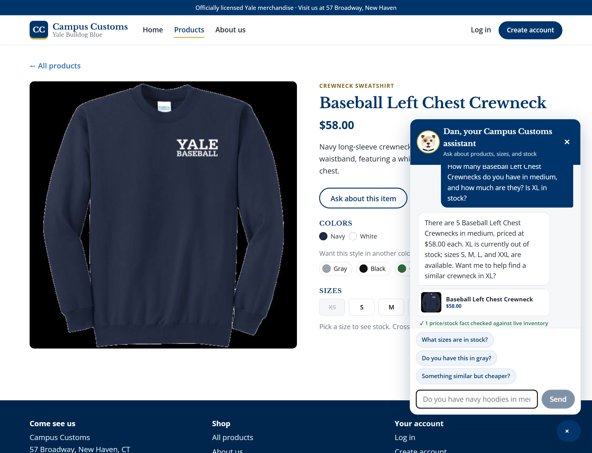
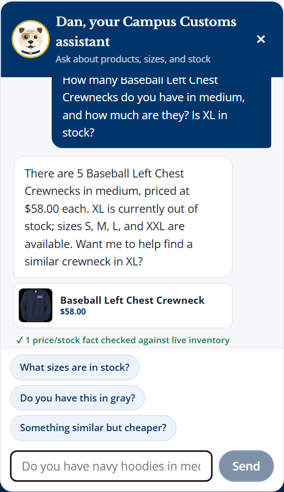
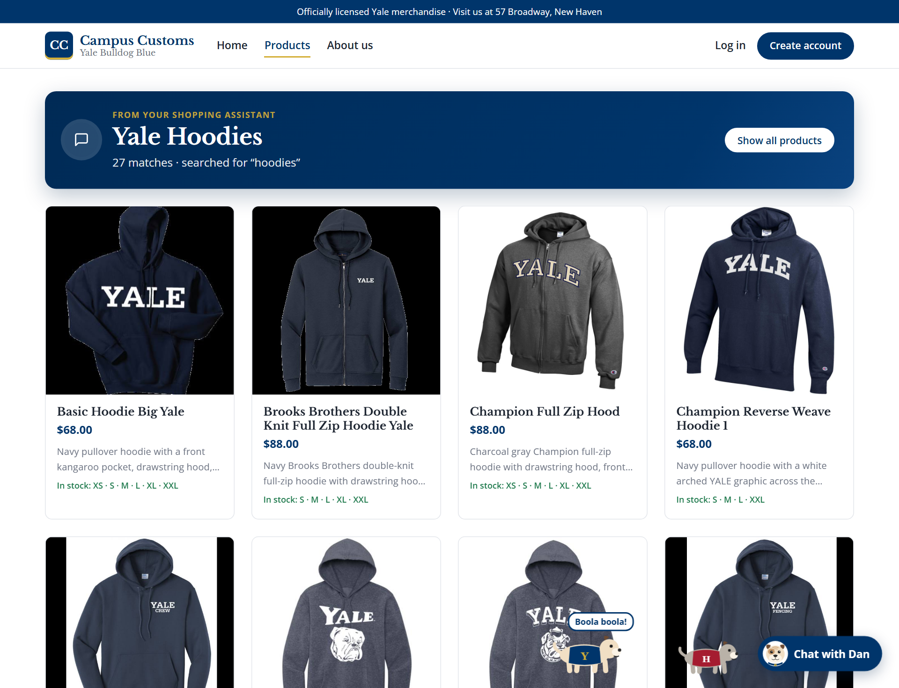
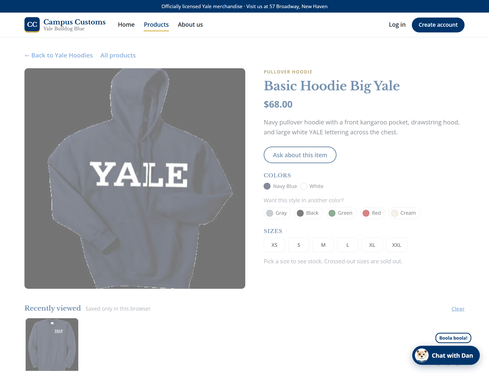
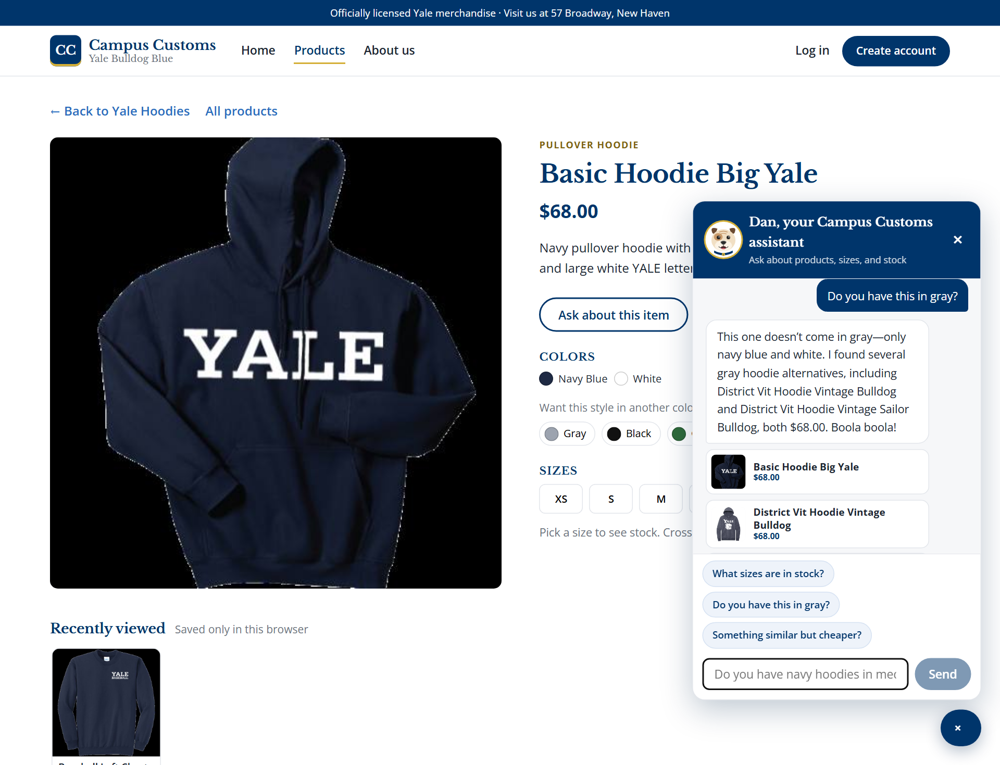
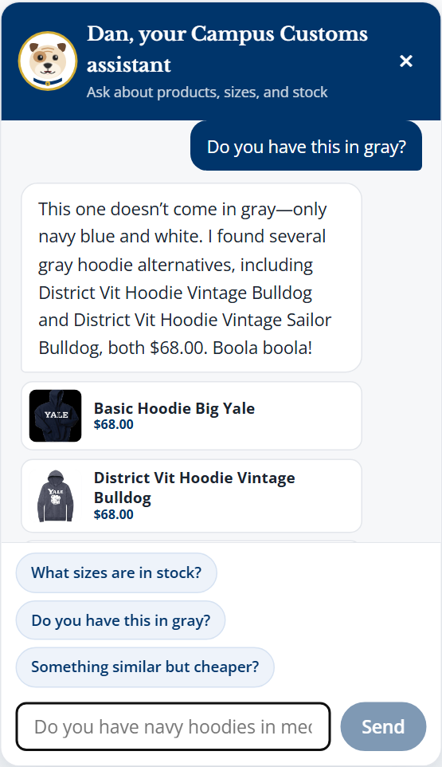

Tested on the live site (localhost:5180, FastAPI on :8000) in a real Chromium browser on October 15, 2026 at 04:50 PM.
Every number below was read from data/data/campus_customs.db at the same time as the screenshot. Re-run with tests/app_check.py.
Check
Result
1. Chat checks an item's inventory and price
PASS
2. "hoodies?" puts dynamic result cards on the page
PASS
3. Usability feature (Problem 9): suggestion chip + "find a similar one"
PASS
1. Chat checks the inventory level of an item
On the Baseball Left Chest Crewneck product page, the shopper asks:
How many Baseball Left Chest Crewnecks do you have in medium, and how much are they? Is XL in stock?
Dan replied:
There are 5 Baseball Left Chest Crewnecks in medium, priced at $58.00 each. XL is currently out of stock; sizes S, M, L, and XXL are available. Want me to help find a similar crewneck in XL?
What the database says at the same moment (catalogue and inventory tables):
Product
Price
XS
S
M
L
XL
XXL
Baseball Left Chest Crewneck
$58.00
0
15
5
25
0
25
Price matches: PASS · M quantity matches: PASS · XL clearly out of stock: PASS

The chat answers on the product page. The price and the per-size stock in the reply are the database values above, not guesses.

Close-up of the question and the full reply. The green line ("✓ 1 price/stock fact checked against live inventory") is the Problem 9 fact-check: before the reply was shown, the price/stock figures it found next to the product name were compared with the database. The table above checks every number.
2. Dynamic search result cards after "hoodies?"
From the home page the shopper types hoodies? in the chat. Dan replied:
I found 27 hoodies and put them all on the page for you. A few favorites: Basic Hoodie Big Yale, Champion Reverse Weave Hoodie 1, District Vit Hoodie Vintage Bulldog, and Champion Full Zip Hood. Boola boola!
The site switched to /products?view=chat and showed 27 product cards under "Yale Hoodies". The database has 27 hoodies.
All cards are hoodies: PASS · Every card's price matches the database: PASS

The chat's search results reach the page as cards (photo, name, price, short description, sizes in stock) under a banner from the assistant. Nothing was clicked: the page updated from the chat answer.

Clicking the first card (Basic Hoodie Big Yale) still opens the Problem 3 single-item page with the large image, full description, price, colors, and sizes.
3. Usability feature from Problem 9: suggestion chip + "find a similar one"
On the Basic Hoodie Big Yale page (colors in the database: navy blue, white), the chat shows one-tap chips that fit the page: What sizes are in stock? · Do you have this in gray? · Something similar but cheaper?.
The shopper taps "Do you have this in gray?". Dan replied:
This one doesn’t come in gray—only navy blue and white. I found several gray hoodie alternatives, including District Vit Hoodie Vintage Bulldog and District Vit Hoodie Vintage Sailor Bulldog, both $68.00. Boola boola!
The gray alternatives it showed, with their colors from the database:
Suggested product
Colors in the database
District Vit Hoodie Vintage Bulldog
dark heather gray, white
District Vit Hoodie Vintage Sailor Bulldog
charcoal gray, white

One tap on a suggestion chip, no typing. The agent's find_similar_products tool found real gray hoodies instead of a dead-end "no".

Close-up: the original hoodie honestly doesn't come in gray, and every suggested alternative does, as the database table above confirms.